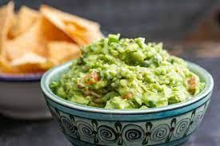

Guacamole

Description
You can make this avocado salad smooth or chuncky depending on your tastes
This is also really good to eat with some chips of course. so don't forget yours!
Ingredients
- 3 avocados
- 1 lime, juiced
- 1 teaspoon salt
- 2 roma (plu,) tomatoes, diced
Steps
- In a medium bowl, mash together the avocados, lime juice, and salt.
- Mix in onion, cilantro, tomatoes, and garlic.
- Stir in cayenne pepper. Refrigerate 1 hour for best flavor, or serve immediately.